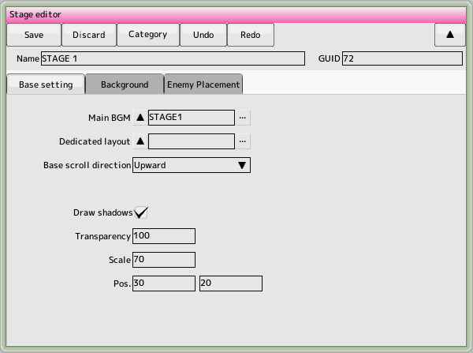
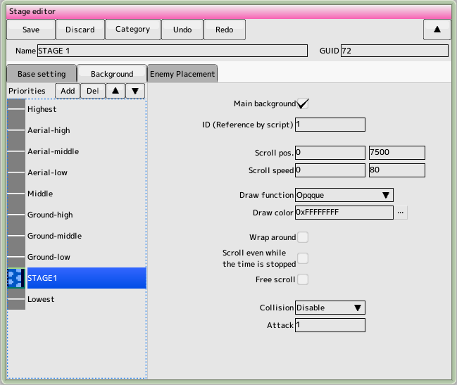

back to the original page
back to the original page
Primary Settings Tab

- Main BGM
The played at the start of the stage. Select background music
- Special layout
Specifies a layout specific to this stage (default layout will be applied if not specified)
- Basic scrolling direction
Switch between vertical and horizontal scrolling here
- Stage start processing
When changing screen resolution, main area, etc. in scripts, frame skipping prevents the screen from momentarily collapsing
- Shadow rendering settings
Sets the parameters for drawing a character's shadow
- Draw shadow of character
- Check the box to draw a shadow in the stage. characterSpecify attributes in the settings
- Transparency (alpha)
Shadow transparency (0-255)
- Scale (equal to 100)
Scale (equal to 100)
Scale of the shadow in terms of magnification
- Display offset
Specifies the position of the shadow to be drawn
- Disable pause
Check this box if you want to disable the pause button in the main stage
- Disable buttons
Disable button operation for scene transitions outside of the main stage
Display preference tab

This section allows you to set the priority and scrolling speed of characters and backgrounds to be displayed on the stage.
- Priority List
Add as many backgrounds as you need here. Once you have selected your background, click the buttons above and below to determine the priority (the higher the priority, the higher the priority). Once you've determined the priority, set the parameters on the right
The sky and the midair are the layers in which the characters appear
- Main background
Only background on which the scrolling is based. Characters that sync to the background will sync to this checked background.
- ID(Referred from script)
Identification ID used to change the scrolling position and speed from the script
- Scroll start position
The position to display the background at the start of the stage
- Scroll speed
Specifies the speed at which the background scrolls
- Drawing Method
Specifies the method for drawing the background
- Foreground color
Specifies the color for drawing the background in ARGB 32 bits.
- Wraparound
Repeatedly show outside the background range
- Scroll even when time is paused
Do not stop scrolling even when a time pause character appears
- Free scrolling
Scrolls the background left and right as the ship moves left and right. . Make the background width larger than the screen size
In horizontal scrolling, the background scrolls up and down to match the up and down movement of the time.
- Please set to Yes if the background has a hit on it (HIT must have been set in the background settings)
- Attack strength
Attack strength when hitting the background
Enemy Location Tab
 The first thing to do here is to specify the length of the entire stage in frames (the whole of the lower right (time). Then, scroll the placement area (right-drag or drag the time bar) and place it in Enter the desired location (time) on the screen.
You can place characters by dragging and dropping them from the project window's character list or formation list to the placement area
The first thing to do here is to specify the length of the entire stage in frames (the whole of the lower right (time). Then, scroll the placement area (right-drag or drag the time bar) and place it in Enter the desired location (time) on the screen.
You can place characters by dragging and dropping them from the project window's character list or formation list to the placement area
- Concept of placement
There are two main types of placement methods
- Arrangement by time (blue)
This is a type of enemy that will appear when the specified time comes. Most STGs with no background (infinite loop) are placed in this way.
- Positioning by coordinates (green)
This is a type of enemy that is placed at a specified position. Used to create enemies that are synchronized with the background. However, you must register a background called the main background in order to use this type of enemy (the main background is (Only one background can exist on stage.)
- How to change the placement method
You can change the placement method with the buttons "Time placement" and "Coordinate placement" in the placement list
- Concept of Time
Time is a minimum unit of measurement, the frame (1/60th of a second). In the placement screen, one frame is one pixel long (see the timeline)
Modification of post-deployment data
Click on the item in the placement list that you want to change (double-click to center it in the placement area). (Focus). Then, various information will be displayed above the placement area, so you can make changes, etc.
- Time (invalid for coordinate placement)
Positioned time information
- X
Located X position information
- Y (invalid for time placement)
Positioned Y information
- PARAM_A,B
Script Comparison of conditional bifurcation parameters passed to the script You can do it.
- When you select
"Do not appear if you are in the screen," the appearance will be skipped if there is a fast-turning target (character setting)
- Item
Select the item that will appear when you destroy it. In the case of formation, it will be set as the last enemy in the formation
Mouse operation
Range selection, dragging the icon to the left
Drag right to scroll and wheel to zoom in and out.
Back to the top of the page